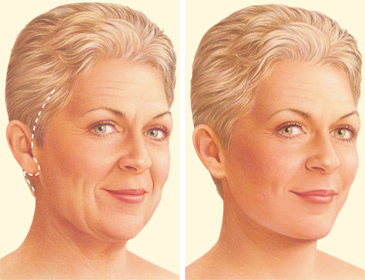

Facelift Surgery (မျက်နှာမတင်ပြုပြင်ခွဲစိတ်ခြင်း)

အဓိပ္ပါယ်ဖွင့်ဆိုချက်
မျက်နှာမတင်ပြုပြင်ခွဲစိတ်ခြင်းဆိုတာ ဘာလဲ။
မျက်နှာမတင်ပြုပြင်ခွဲစိတ်ခြင်းကို ဆေးပညာအရ rhytidectomy ဟုခေါ်ပြီး ငယ်ရွယ်သည့်မျက်နှာပုံစံထင်ရရန် ပြုပြင်ခွဲစိတ်ခြင်းဖြစ်သည်။ ဤနည်းလမ်းသည် သင့်မျက်နှာနှင့် လည်ပင်းမှတစ်ရှူးပျော့များအား ဆွဲဆန်မတင့်လိုက်ခြင်းဖြစ်သည်။ ဖြစ်နိုင်သည့်ရလဒ်ကိုသာ မျှော်လင့်ရန်လိုအပ်ပြီး ဒီခွဲစိတ်မှုကိုရွေးချယ်ဖို့ရန်အတွက် သေချာစဉ်းစားသင့်ပါသည်။
အခြေခံအကြောင်းရင်းကို သိရှိခြင်း
မျက်နှာမတင်ပြုပြင်ခွဲစိတ်ခြင်းကို ဘာကြောင့်လုပ်ရသလဲ။
အသက်ကြီးလာလျှင် ကမ္ဘာမြေစွမ်းအားမှ မျက်နှာရှိအရေပြားနှင့် တစ်ရှူးပျော့များအား ဆွဲထားသောကြောင့် တွဲကျလာသည်။ သင့်၌ နှာခေါင်းနှင့်ပါးစပ်အနီး အရည်ပြားအခေါက်ကြီးခြင်း၊ ပါးများတွဲကျလာခြင်း သို့မဟုတ် မေးနှစ်ထပ်ရှိခြင်းတို့အတွက် မျက်နှာမတင်ပြုပြင်ခွဲစိတ်ခြင်းက အဆင်ပြေပါသည်။
သင်ခွဲစိတ်ရန်သင့်တော်မသင့်တော်သိရန် ဆရာဝန်မှ စစ်ဆေးမှုများကို ပြုလုပ်ပါလိမ့်မည်။
မျက်နှာကိုဓါးနှင့် ခွဲစိတ်ရမှာကြောက်လျှင် ဘိုတောက်စ်ထိုးခြင်း သို့မဟုတ် resurfacing တို့ဖြင့်လည်း အရေးအကြောင်းများကို သက်သာစေပါသည်။ အရေးအကြောင်းနက်လျှင် အစာထိုးခြင်းကို ပြုလုပ်နိုင်ပါသည်။ မျက်နှာလေးပြည့်နေသည်ဟုထင်ရရန် ခန္ဓါကိုယ်၏အခြားနေရာမှအဆီများကိုယူကာ မျက်နှာအရေးအကြောင်းများတွင် အစားထိုးဖြည့်တင်းနိုင်သည်။
မျက်နှာမတင်ပြုပြင်ခွဲစိတ်ခြင်းရဲ့ အန္တရာယ်တွေက ဘာတွေလဲ။
နာခြင်း မအီမသာဖြစ်ခြင်းမျိုးတော့ ဖြစ်တတ်သည်။ အကျိုရလဒ်များသည် ၁၀ နှစ်လောက်ထိခံ၏။ အကောင်းဆုံးရလဒ်များ ရရှိစေရန်အတွက် အပိုဆောင်းနည်းလမ်းများလည်း လိုအပ်နိုင်သည်။ လည်ပင်းမတင်ခြင်း၊ Blepharoplasty (မျက်ခွံခွဲစိတ်ခြင်း)၊ အဆီစုပ်ခြင်း၊ အဆီသွင်းခြင်းနှင့် ပါးမှအဆီအိတ်ဖယ်ခြင်း၊ နှဖူးမတင်ခြင်း၊ မျက်ခုံးမွှေးမတင်ခြင်း၊ ဓါတုဆေးများ သို့မဟုတ် လေဆာဖြင့် ချေးချွတ်ခြင်း၊ ပါး ပါးအောက် သို့ မေးအောက် အစားထိုးပြုပြင်ခြင်း
ဖြစ်လေ့မရှိသော်လည်း မျက်နှာမတင်ပြုပြင်ခွဲစိတ်ခြင်း၏ အန္တရာယ်နှင့် နောက်ဆက်တွဲပြဿနာများမှာ –
သွေးထွက်ခြင်း၊ သွေးခြေဥခြင်း၊ အညိုအမည်းစွဲခြင်း
ပိုးဝင်ခြင်း
အာရုံကြော အလုပ်မလုပ်ခြင်း (ကြွက်သားများ မလှုပ်နိုင်တော့ခြင်း သို့မဟုတ် ခံစားမရနိုင်ခြင်း) ၎င်းသည် ခဏတာသာဖြစ်သည်။
အမာရွတ်ကျယ်ခြင်း သို့မဟုတ် ထူခြင်း
ခွဲစိတ်ရာတစ်ဝိုက်တွင် အမွှေးအမျှင်ဆုံးရှုံးခြင်း
မျက်နှာအချိုးမညီခြင်း (မျက်နှာနှစ်ဖက် မတူညီခြင်း)
အရေပြားပုပ်ခြင်း (တစ်ရှူးများသေရာမှ အရေပြားဆုံးရှုံးခြင်း
အစာမစားခြင်းသို့မဟုတ် ဆေးရပ်ခြင်းတို့ကဲ့သို့ မခွဲစိတ်မီဆရာဝန်ညွှန်ကြားသည်များအား လိုက်နာခြင်းဖြင့် နေုာက်ဆက်တွဲအန္တရာယ်များကို လျော့ချနိုင်ပါသည်။
ခွဲစိတ်မှုကိုမလုပ်ခင် အန္တရာယ်နှင့် နောက်ဆက်တွဲ ပြဿနာများကို သိထားရန် အရေးကြီး၏။ မေးချင်သည်များရှိပါက ဆရာဝန် သို့မဟုတ် ခွဲစိတ်ဆရာဝန်နှင့် ဆွေးနွေးနိုင်ပါသည်။
ကြိုတင်ပြင်ဆင်ခြင်း
မျက်နှာမတင်ပြုပြင်ခွဲစိတ်ခြင်းအတွက် ဘာတွေပြင်ထားရမလဲ။
သင်လက်ရှိသုံးနေသည့်ဆေး၊ ဓါတ်မတည့်သည်များ သို့မဟုတ် ကျန်းမာရေးအခြေအနေများကို ဆရာဝန်နှင့် ဆွေးနွေးတိုင်ပါ။ ခွဲစိတ်မှုမလုပ်ခင် မေ့ဆေးဆရာဝန်နှင့် မေ့ဆေးအတွက် အတူပြင်ဆင်ရပါမည်။ မခွဲစိတ်ခင် အစားအသောက်ရပ်ရန် ညွှန်းကြားသည့်အချိန်ကို အတိအကျလိုက်နာရန် အရေးကြီးပါသည်။
ဘယ်အချိန်မှာ အစားအသောက် ရပ်ထားမည်ဆိုခြင်းကဲ့သို ညွှန်ကြားချက်များအား မခွဲစိတ်ခင် သင့်ကိုညွှန်ကြားပါလိမ့်မည်။ ဖြစ်ရပ်အများစုတွင် မခွဲစိတ်ခင် ၆ နာရီကြိုတင် အစားအသောက်ရပ်ထားရပါသည်။ ကော်ဖီလို အရည်များကိုတော့ မခွဲစိတ်ခင် နာရီအနည်းငယ်အလိုထိ သောက်သုံးနိုင်ပါသည်။
ခွဲစိတ်ကုသခြင်း
မျက်နှာမတင်ပြုပြင်ခွဲစိတ်နေစဉ် ဘာဖြစ်နိုင်မလဲ။
ခွဲစိတ်မှုအား မေ့ဆေးပေးပြီးပြုလုပ်မည်ဖြစ်ပြီး၂-၃ နာရီခန့်ကြာတတ်ပါသည်။
SMAS မျက်နှာမတင်ခြင်း – ဆရာဝန်မှ မျက်နှာဘေးဖက်ဆံပင်လိုင်းမှ ခွဲမည်ဖြစ်သည်။ မာသည့်တစ်ရှူးများရှိရာ အတွင်းအလွှာ (SMAS အလွှာ)အောက်တွင် မတင်ခြင်း တင်းတင်းဆွဲခြင်းများပြုလုပ်ပါမည်။ အရေပြားအား နားနောက်ထိဆွဲတင်လိုက်က ပိုလျှံသွားသည့် အရေပြားအား ဖြတ်ပစ်ပါလိမ့်မည်။
MACS မျက်နှာမတင်ခြင်း – ဆရာဝန်သည် SMAS အလွှာအောက်တွင် ခွဲစိတ်ခြင်းအစား ချုပ်ရိုးများနှင့် မတင်ပါမည်။ ထို့ကြောင့်ခွဲစိတ်ရသည်မှာ သိပ်မများသော်လည်း ရလဒ်သည် အချိန်ကြာကြာမခံပါ။
တခြားမျက်နှာမတင်နည်းများ – အလယ်မျက်နှာမတင်ခြင်း၊ composite facelift နှင့် မျက်နှာအတွင်းပိုင်းအလွှာများကို မတင်ခြင်းတို့ ဖြစ်ပါသည်။
စိတ်ပူသည်များ မေးချင်သည်များရှိပါက သင်၏ဆရာဝန် သို့မဟုတ် ခွဲစိတ်ဆရာဝန်နှင့် ဆွေးနွေးနိုင်ပါသည်။
ခွဲစိတ်ပြီးနောက် အခြေအနေ
မျက်နှာမတင်ပြုပြင်ခွဲစိတ်ပြီးနောက် ဘာဖြစ်နိုင်မလဲ။
ခွဲစိတ်သည့်နေ့ သို့မဟုတ် နောက်နေ့တွင် အိမ်ကိုပြန်နိုင်ပါသည်။
၂ ပတ်အကြာတွင် အလုပ်အမျိုးအစားပေါ်မူတည်ပြီး အလုပ်ပြန်ဝင်နိုင်မည်ဖြစ်သည်။
ငုံ့ခြင်း၊ လိင်ဆက်ဆံခြင်းအား နှစ်ပတ်အတွင်း မလုပ်ရပါ။
ပုံမှန်လေ့ကျင့်ခန်းလုပ်ခြင်းက သင့်နေ့စဉ်လုပ်ငန်းများကို မြန်မြန်လုပ်လာနိုင်ရန် အထောက်အကူပြုပါသည်။ လေ့ကျင့်ခန်းမလုပ်ခင် ကျန်းမာရေးအဖွဲ့၊ ဆေးခန်းများတွင် မေးမြန်းပါ။
မျက်နှာမတင်ခြင်း၏ရလဒ်သည် အချိန်အတော်ကြာသည်အထိ ခံ၏။ မျက်နှာသည် အသက်ကြီးရင့်မှုကို ဆက်လက်ဖြစ်နေမည်ဖြစ်သော်လည်း ခွဲစိတ်မှုမလုပ်ထားသူများထက် ပိုငယ်နေသလို ထင်နေရပါလိမ့်မည်။
Source-Dr. Hlaing Min Ko Ko